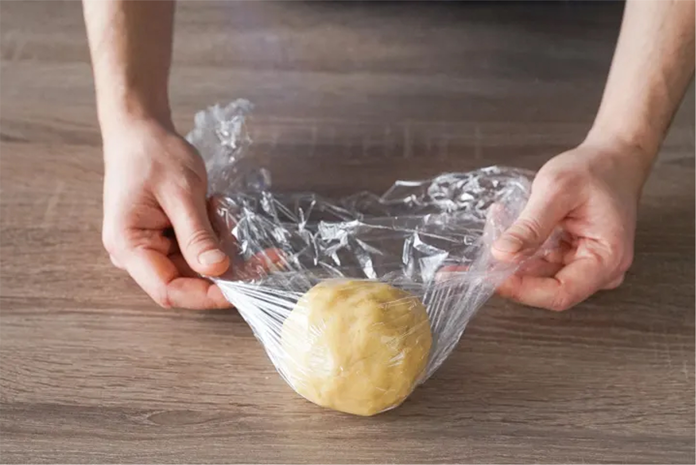

45 минут
45 минут
Ингриденты:
Масло сливочное, 150г.
Просеянная мука, 175 г.
Сахар 2 ст. л.
Яичный желток, 1 шт.
Яйцо, 6 шт.
Лимонный пирог, простой в приготовлении, с нежной начинкой и ярким вкусом, будет очень хорош и для семейного чаепития, и для праздничного застолья. Да, калорийность такого пирога достаточно высокая — почти 300 ккал на порцию. Но с другой стороны, все десерты, за исключением диетических и ПП-вариантов «весят» примерно столько же, но так ли уж часто мы их готовим? В чем еще плюс домашней выпечки и конкретно этого пирога, так это в том, что он наполнит дом невероятным ароматом. Как же сразу всем станет уютно!
Шаг 1
Подготовка теста
Сливочное масло нарежьте кубиками, разотрите с мукой, сахаром и солью. Добавьте желток и 1 ст. л. холодной воды. Замесите тесто. Скатайте в шар, заверните в пленку и уберите в холодильник на 20 мин.

Шаг 2
Выжимаем лимоны
Лимоны вымойте. С трех лимонов снимите цедру и измельчите ее. Из всех лимонов выжмите сок.
Шаг 3
Создаем начинку
Взбейте яйца с сахаром, добавьте лимонную цедру и сок. Оставьте на 10 мин.
Шаг 4
Создаем форму пирога
Форму для выпечки диаметром 24 см смажьте сливочным маслом. Раскатайте тесто в большой круг и проложите им форму так, чтобы края выступали над формой. Сделайте вилкой несколько проколов в тесте. Поместите на 10 мин. в холодильник.
Шаг 5
Выпекаем основу
Застелите тесто пергаментом, насыпьте сверху сухую фасоль. Выпекайте 12–15 мин. при 190 °С. Удалите фасоль и пергамент. Оставьте в духовке еще на 10–12 мин.
Пир!
Запекаем и наслаждаемся!
Начинку процедите, добавьте сливки, перемешайте. Влейте начинку в форму. Снизьте температуру в духовке до 150 °С и запекайте 30–35 мин. Достаньте из духовки и оставьте на 45–50 мин., выньте из формы. Посыпьте сахарной пудрой.

143
Поделиться статьей